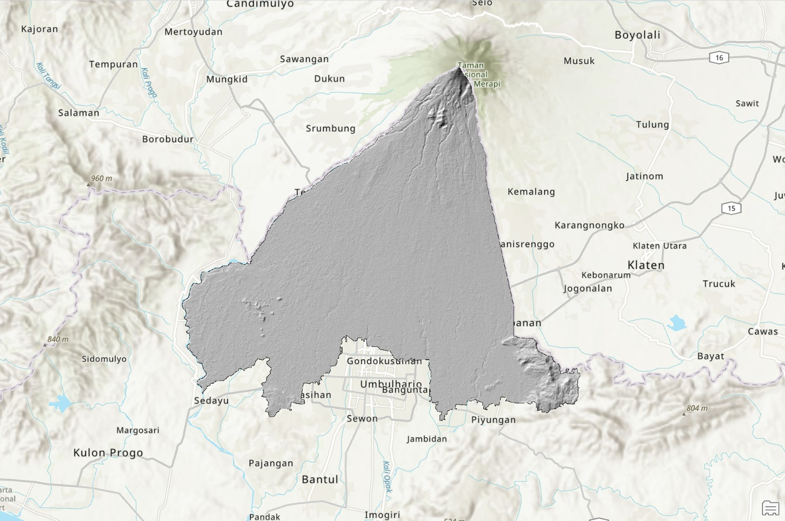
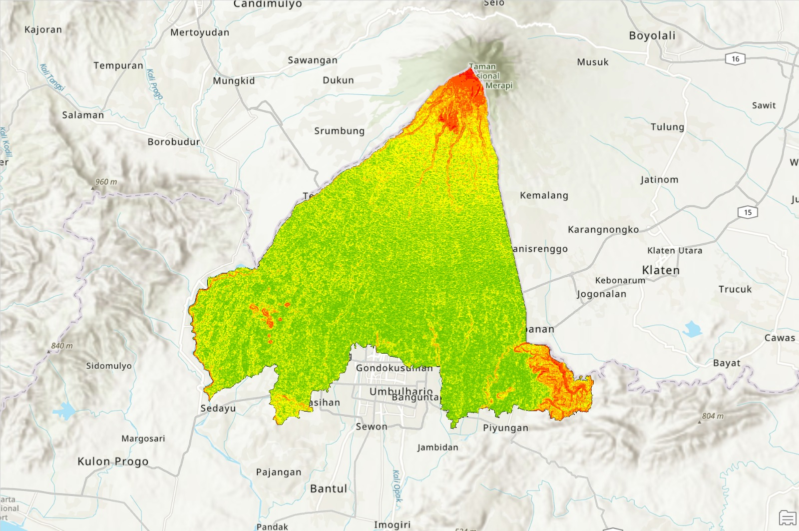
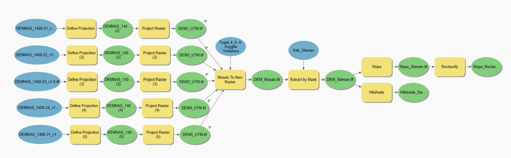

Analisis Kemiringan Lereng dan Hillshade di Kabupaten Sleman dengan ArcGIS Pro
Latar belakang
Kemiringan lereng memengaruhi aliran permukaan, erosi, kerawanan longsor, dan kesesuaian lahan untuk berbagai penggunaan. Kabupaten Sleman di Daerah Istimewa Yogyakarta memiliki relief yang beragam, dari lereng atas Gunung Merapi di utara hingga dataran di selatan, sehingga cocok untuk menggambarkan sebaran kemiringan lereng dari model elevasi digital.
Proyek ini mengolah DEMNAS menjadi peta kemiringan lereng yang diklasifikasikan dan peta hillshade, dengan alur kerja yang disusun di ModelBuilder ArcGIS Pro agar dapat diulang.
Data yang digunakan
| Data | Format Data | Jenis Data | Sumber |
|---|---|---|---|
| DEMNAS (lembar 1408-21, 1408-22, 1408-23, 1408-24, dan 1408-31; resolusi 8 m) | Raster | Sekunder | BIG, Tanah Air Indonesia |
| Batas administrasi Kabupaten Sleman | Vektor | Sekunder | Ina-Geoportal |
Metode
Seluruh pengolahan dilakukan di ArcGIS Pro dengan alat Spatial Analyst dan dirangkai dalam ModelBuilder. Kemiringan lereng yang dihasilkan kemudian diklasifikasikan menurut Van Zuidam (1983) menjadi tujuh kelas.
| Tahap | Keterangan |
|---|---|
| Reproyeksi | Project Raster pada tiap lembar DEMNAS ke UTM zona 49S (EPSG:32749) |
| Penggabungan DEM | Mosaic To New Raster |
| Pemotongan DEM | Extract by Mask dengan batas Kabupaten Sleman |
| Kemiringan lereng | Slope, satuan derajat |
| Klasifikasi lereng | Reclassify ke 7 kelas menurut Van Zuidam (1983) |
| Hillshade | Hillshade dari DEM hasil pemotongan, azimuth (315°), ketinggian matahari (45°) |
Hasil
Ketinggian di Kabupaten Sleman berkisar dari sekitar 38 m hingga 2.874 m di atas permukaan laut. Kelas lereng yang paling luas adalah bergelombang landai (kelas 1) dengan luas 20.405,9 ha (35,5%), disusul datar atau hampir datar (kelas 0) seluas 19.166,5 ha (33,3%). Kelas berbukit terjal hingga pegunungan sangat terjal (kelas 4 dan 5) hanya menempati sekitar 4% wilayah dan terkonsentrasi di bagian utara, di lereng atas Gunung Merapi, sedangkan bagian selatan didominasi kelas datar sampai bergelombang. Tidak ada piksel yang masuk kelas pegunungan sangat curam (kemiringan lebih dari 55°).



| Kelas | Kemiringan (%) | Beda tinggi (m) | Luas (ha) | Persentase (%) |
|---|---|---|---|---|
| 0 · Datar/hampir datar | 0–2 | < 5 | 19.166,5 | 33,3 |
| 1 · Bergelombang landai | 3–7 | 5–50 | 20.405,9 | 35,5 |
| 2 · Bergelombang miring | 8–13 | 50–75 | 12.012,7 | 20,9 |
| 3 · Berbukit bergelombang | 14–20 | 75–200 | 3.764,7 | 6,5 |
| 4 · Berbukit terjal | 21–55 | 200–500 | 2.002,4 | 3,5 |
| 5 · Pegunungan sangat terjal | 56–140 | 500–1000 | 128,1 | 0,2 |
| 6 · Pegunungan sangat curam | > 140 | > 1000 | 0 | 0 |
| Total | 57.480,3 | 100 |
Klasifikasi relief mengikuti Van Zuidam (1983).
Kesimpulan
Pengolahan DEMNAS di ArcGIS Pro menghasilkan peta kemiringan lereng Kabupaten Sleman yang menunjukkan perbedaan jelas antara lereng curam di sekitar Gunung Merapi dan lahan datar sampai landai di bagian selatan. Alur kerja yang disusun di ModelBuilder dapat dijalankan ulang untuk wilayah lain. Hasil bergantung pada resolusi DEM dan belum divalidasi dengan pengukuran lapangan.
← View other projects